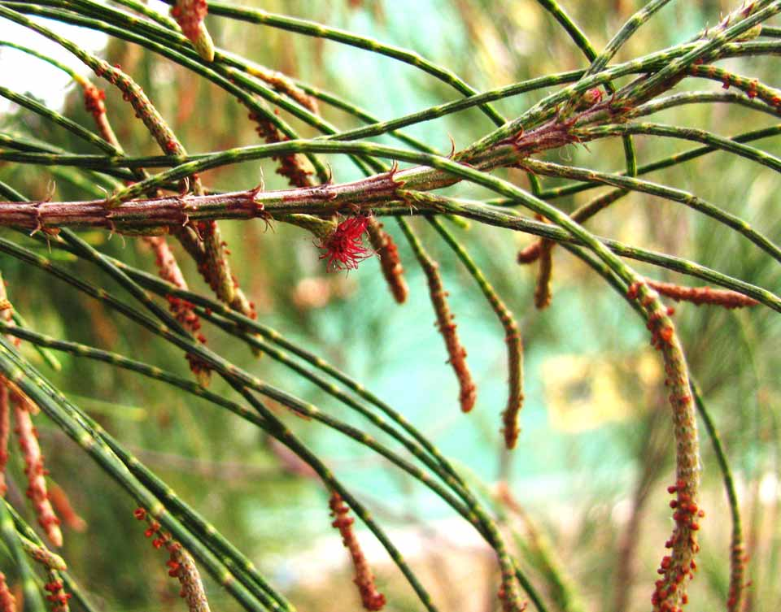
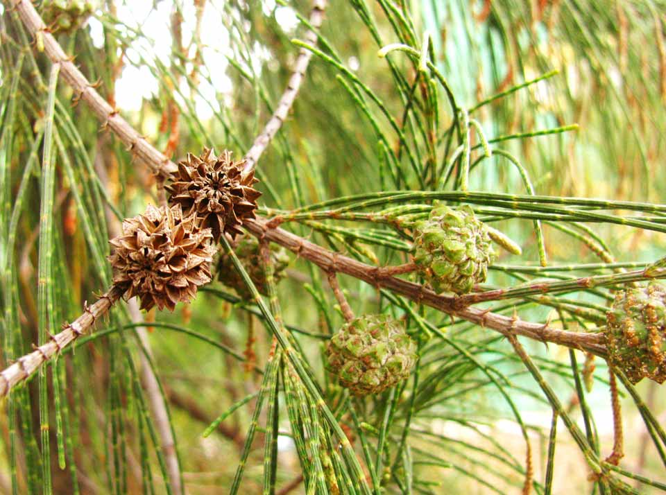
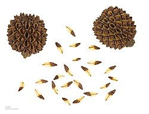

- Familia: Casuarinaceae (familia de las casuarinas).
- Tronco: es recto y delgado, con un diámetro que puede alcanzar hasta 1 metro en árboles maduros. Es leñoso y fuerte, proporcionando una estructura robusta para el árbol.
- Corteza: es de color gris a marrón y tiene una textura rugosa y fisurada, que se vuelve más prominente con la edad. En los árboles jóvenes, la corteza es más lisa.
- Copa: es abierta y piramidal en su juventud, volviéndose más amplia y redondeada con la edad. Las ramas son delgadas y caídas, creando un aspecto plumoso y elegante.
- Hoja: son muy reducidas y aparecen en forma de escamas diminutas en los nudos de los segmentos articulares de las ramas, que se asemejan a las agujas de un pino. Estas ramas verdes y articuladas realizan la fotosíntesis en lugar de las hojas verdaderas.
- Flor: son pequeñas y discretas. Las flores masculinas y femeninas se encuentran en amentos separados en el mismo árbol (monoico). Los amentos masculinos son delgados y alargados, mientras que los amentos femeninos son más pequeños y agrupados.
- Fruto: es un cono leñoso y pequeño, de 1 a 2 cm de largo, que contiene numerosas semillas aladas. Los conos tienen una apariencia similar a las piñas y se abren para liberar las semillas cuando maduran.
- Usos: La casuarina se cultiva por su capacidad para fijar nitrógeno en el suelo, mejorando así la fertilidad del suelo. Se utiliza en la reforestación, la estabilización de suelos y dunas de arena, y como cortavientos. La madera es dura y resistente, utilizada en la fabricación de muebles, postes, y en la producción de carbón vegetal. Además, la casuarina es apreciada en jardinería por su resistencia a condiciones adversas y su capacidad para crecer en suelos pobres y arenosos.
- Floración: ocurre en diferentes épocas del año dependiendo de la ubicación, pero suele ser más intensa en primavera y otoño. Las flores masculinas y femeninas son discretas y se encuentran en amentos separados.
- Fructificacion: sigue a la floración, con la formación de conos leñosos que contienen semillas aladas. Los conos maduran y se abren para liberar las semillas, que se dispersan por el viento.
- Reproducción: se reproduce principalmente por semillas. Los conos maduros se cosechan y las semillas se siembran en condiciones adecuadas para germinar. También es posible la reproducción por esquejes y brotes de raíz.

Hoja

Fruto

Semillas